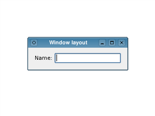

Widgets Tutorial - Using Layouts
Usually, child widgets are arranged inside a window using layout objects rather than by specifying positions and sizes explicitly. Here, we construct a label and line edit widget that we would like to arrange side-by-side.
#include <QtWidgets> int main(int argc, char *argv[]) { QApplication app(argc, argv); QWidget window; QLabel *label = new QLabel(QApplication::translate("windowlayout", "Name:")); QLineEdit *lineEdit = new QLineEdit(); QHBoxLayout *layout = new QHBoxLayout(); layout->addWidget(label); layout->addWidget(lineEdit); window.setLayout(layout); window.setWindowTitle( QApplication::translate("windowlayout", "Window layout")); window.show(); return app.exec(); } |
 |
The layout object we construct manages the positions and sizes of widgets supplied to it with the addWidget() function. The layout itself is supplied to the window itself in the call to setLayout(). Layouts are only visible through the effects they have on the widgets (and other layouts) they are responsible for managing.
In the example above, the ownership of each widget is not immediately clear. Since we construct the widgets and the layout without parent objects, we would expect to see an empty window and two separate windows containing a label and a line edit. However, when we tell the layout to manage the label and line edit and set the layout on the window, both the widgets and the layout itself are ''reparented'' to become children of the window.